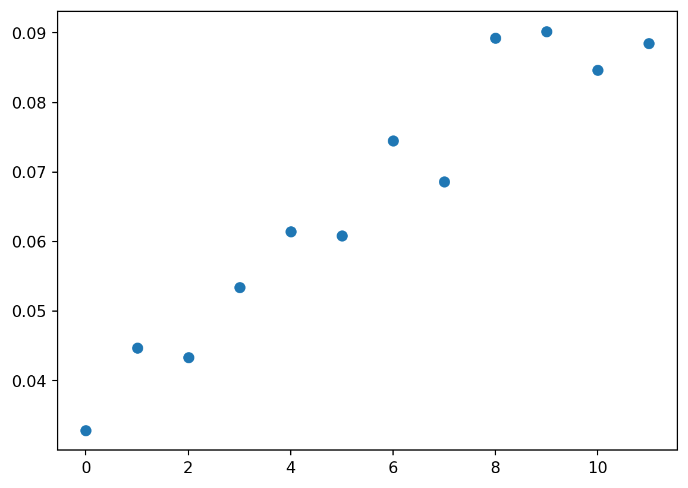
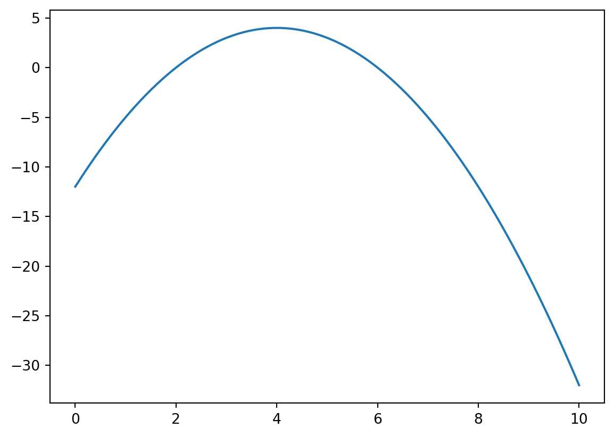

x = list(range(8))
x[0, 1, 2, 3, 4, 5, 6, 7]
x is a list with 8 elements. Write a Python command using slicing that returns the last 4 elements of this list as a new list.
Answer:
One answer is x[4:]. To see this, consider the following list:
x = list(range(8))
x[0, 1, 2, 3, 4, 5, 6, 7]Performing the slice:
x[4:][4, 5, 6, 7]Another possibility is to use x[-4:]. This gets the last 4 elements for any list with at least 4 elements.
x is a positive integer. Write a Python command in the box below that will always return the last digit of x. For example, if x = 123, your command should return 3. If x = 9876, your command should return 6.
Hint: Use the modulo operator.
Answer:
We get the remainder from dividing by 10 with x % 10. This works for both examples:
123 % 1039876 % 106Assuming the math module has already been imported into Python with import math, write a Python command that calculates the natural logarithm of 20.
Answer:
math.log(20)2.995732273553991Consider the two lists x and y:
x = [2, 4, 3]
y = [7, 2, 12]Write a list comprehension in the box below that sums the two lists element by element. The output should equal [9, 6, 15].
Answer:
[i + j for i, j in zip(x, y)]Your company buys components from suppliers in the Netherlands, Belgium, Germany and Spain. A competitor buys components from suppliers in Belgium, Germany, France and Italy. These supplier countries can be written as Python sets as follows:
own = {'NLD', 'BEL', 'GER', 'ESP'}
rival = {'BEL', 'GER', 'FRA', 'ITA'}Using the objects own and rival, write a Python command using an appropriate set method that returns the countries in which both companies have suppliers.
Answer:
own.intersection(rival){'BEL', 'GER'}In this question you will use an iterative algorithm to find a fixed point of a function up to a tolerance level \epsilon_{tol}. A fixed point of a function f is a value x^\star that satisfies x^\star=f(x^\star).
The steps of the algorithm are as follows:
You will write a Python function that takes three inputs:
f, the function we want to find a fixed point of.x0, the initial guess for the fixed point of f.tol, the numeric value of the tolerance level \epsilon_{tol}.f1 in the box below that computes f_1(x)=\frac{1}{1+x} given input x.Answer:
def f1(x):
return 1 / (1 + x)f2 in the box below that computes f_2(x)=e^{-x} given input x.Answer:
import math
def f2(x):
return math.exp(-x)fixedpoint that takes 3 arguments: f, x0, tol. This function should follow the algorithm in the block introduction and return the fixed point of the function f.Answer:
def fixedpoint(f, x0, tol):
dist = tol + 1
while dist > tol:
x1 = f(x0)
dist = abs(x1 - x0)
x0 = x1
return x1fixedpoint with an initial guess x_0=1 and a tolerance \epsilon_{tol}=1\times 10^{-9} (use 1e-9 for \epsilon_{tol} in your code). Report the fixed points of functions f_1 and f_2.Answer: The fixed point of f_1:
fixedpoint(f1, 1, 1e-9)0.618033988957902The fixed point of f_2:
fixedpoint(f2, 1, 1e-9)0.5671432901223239Download the file insurance-claims-data.csv. The dataset contains information on car insurance claims. The variable descriptions are:
'claim_status': =1 if a claim was made, =0 if not.'customer_age': The age of the insured customer (in years).'vehicle_age': The age of the insured vehicle (in years).'subscription_length': The duration the insurance policy has been active (in years).'transmission_type': Whether the vehicle has Automatic or Manual transmission.Use pandas to load the dataset into a dataframe called df and use it to answer the following questions:
import pandas as pd
df = pd.read_csv("insurance-claims-data.csv")Answer:
df['customer_age'].mean()44.82388080080558Answer:
df[df['claim_status'] == 1]['vehicle_age'].mean()1.266221985058698Answer:
df[(df['customer_age'] >= 50) & (df['vehicle_age'] >= 3)]['claim_status'].mean()0.05241090146750524groupby that calculates the claim rate by transmission type. That is, for each transmission type it shows the average of claim status. The output should be:transmission_type
Automatic 0.064184
Manual 0.063854
Name: claim_status, dtype: float64Answer:
df.groupby('transmission_type')['claim_status'].mean()transmission_type
Automatic 0.064184
Manual 0.063854
Name: claim_status, dtype: float64subscription_length_years which applies the int() function to the subscription_length variable. This will remove the decimal part of the number (i.e. round it down to the nearest whole number).Answer: There are several possibilities:
df['subscription_length_years'] = df['subscription_length'].apply(int)df['subscription_length_years'] = df['subscription_length'].apply(lambda x: int(x))df['subscription_length_years'] = [int(i) for i in df['subscription_length']]df['subscription_length_years'] = df['subscription_length'].astype(int)subscription_length_years on the horizontal axis and the average claim status by subscription_length_years on the vertical axis. Because very few observations have a subscription length of 12 years or more, only include data with a subscription length of less than 12 years in your plot.Use groupby with the as_index=False option to get a smaller dataframe with the required data.
Choose the answer below which best interprets what you see in the figure:
Answer:
import matplotlib.pyplot as plt
plot_df = df.groupby('subscription_length_years', as_index=False)['claim_status'].mean()
plot_df = plot_df[plot_df['subscription_length_years'] < 12]
plt.scatter(plot_df['subscription_length_years'], plot_df['claim_status'])
plt.show()
The general trend is that the claim rate is increasing in subscription length.
In this block we will investigate properties of the mathematical function h(x)=-x^2+8x-12.
h which takes as input x and returns output h(x)=-x^2+8x-12.Answer:
def h(x):
return - x ** 2 + 8 * x - 12Answer:
import numpy as np
x = np.linspace(0, 10, 100)Answer:
import matplotlib.pyplot as plt
plt.plot(x, h(x))
minimize function from scipy.optimize, making the necessary adjustments to maximize h(x).Answer:
from scipy.optimize import minimize
minimize(lambda x: -h(x), x0=1) message: Optimization terminated successfully.
success: True
status: 0
fun: -4.0
x: [ 4.000e+00]
nit: 2
jac: [ 2.384e-07]
hess_inv: [[ 5.000e-01]]
nfev: 6
njev: 3You are a company that rents bicycles to visitors to a national park. You rent one type of standard bicycle and charge €5 per hour. Standard bicycle rentals have no additional fee. You also rent electric bicycles for €8 per hour and charge a fixed battery service charge of €12.
Rental. The class should include the following:__init__ method that takes the following two parameters and stores them as attributes:
customer_namehourscalculate_total() that returns the value of the rental in euros. This should be hours multiplied by 5.Test your class using the following code, which should return 30:
test_rental_1 = Rental('Mathieu van der Poel', 6)
test_rental_1.calculate_total()Answer:
class Rental:
def __init__(self, customer_name, hours):
self.customer_name = customer_name
self.hours = hours
def calculate_total(self):
return self.hours * 5Using the test code:
test_rental_1 = Rental('Mathieu van der Poel', 6)
test_rental_1.calculate_total()30ElectricRental that inherits from the Rental class. The ElectricRental class should include the following:__init__ method that takes the same 2 arguments as Rental but has the following 3 attributes:
customer_namehoursbattery_charge (set equal to 12).super() to call the constructor of the Rental class and set the first 2 attributes.calculate_total() method so that it returns hours multiplied by 8 plus the battery service charge.Test your class using the following code, which should return 52:
test_rental_2 = ElectricRental('Tadej Pogacar', 5)
test_rental_2.calculate_total()Answer:
class ElectricRental(Rental):
def __init__(self, customer_name, hours):
super().__init__(customer_name, hours)
self.battery_charge = 12
def calculate_total(self):
return self.hours * 8 + self.battery_chargeUsing the test code:
test_rental_2 = ElectricRental('Tadej Pogacar', 5)
test_rental_2.calculate_total()52